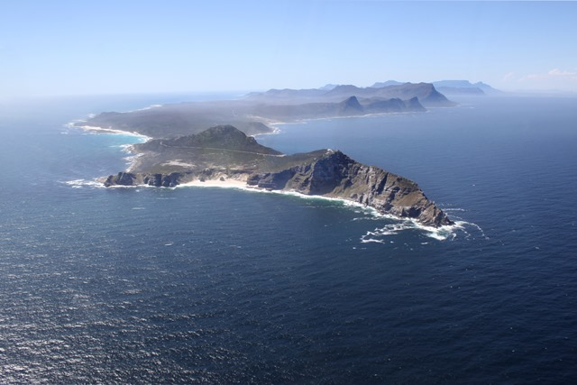
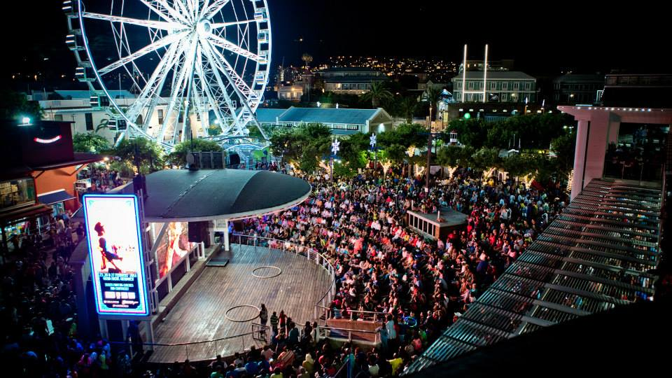
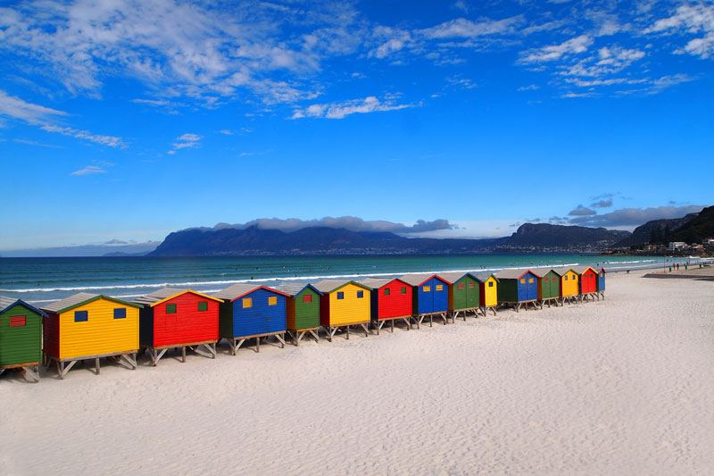

Most foreign tourists visit the Western Cape on their trip to South Africa.
Cape Town is the "Mother City" of South Africa, and is famous for Table Mountain.
Other main attractions of this province are the Garden Route, and the Cape winelands
with Stellenbosch,Franschhoek and Paarl.
  Above is an image of Cape Point, the southernmost tip of Africa.The busy V and A Waterfront,
and the iconic colourfully painted beach huts of Muizenberg beach.